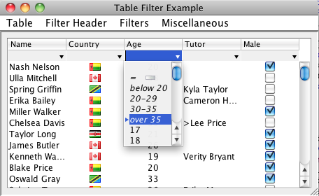

TableFilter tutorial
- Filter Header
- Filter Editor
- Auto Choices
- Filter Expressions
- Parser Model
- Custom types
- Custom choices
- Comparisons
- Html support
- Additional functionality
- Settings
- Examples
Filter Header
TableFilterHeader is the main Gui component in the TableFilter library; the following line of code:
TableFilterHeader filterHeader = new TableFilterHeader(table, AutoChoices.ENABLED);
is enough to setup a filter in a table, looking like:

The header can be placed as well just atop the table:
filterHeader.setPosition(Position.TOP);
This header places together a set of filter editors, one per table's column, and is responsible to resize / move them as the table's columns change their layout. Please note that the colors, fonts, are fully customizable, and will mimic by default the table header. The default look and feel, on Windows Vista, looks like:

It is also possible to place manually the header, for example as a footer below the table:
Filter Editor
Each column in a table with a TableFilterHeader has an associated filter editor, that looks like:
In this case, the content is text based, and a pop down menu will show any list of prepopulated choices, as well as a historic of the last provided inputs. The editor provides autocompletion, and, if defined as non editable, will restrict the input to one of the available choices.
Since version 4.0, the choices can be adaptives -this functionality is enabled by default-. With adaptive choices, applying a filter on an editor will hide, in the other editors, all the choices that are not applicable any longer (selecting those choices would produce and empty table, completely filtered out).
It is possible to provide a renderer, as it is done on generic swing tables and lists, supporting implementations such as:

An editor has the type IFilterEditor, and can be obtained from the TableFilterHeader as:
IFilterEditor editor = filterHeader.getFilterEditor(modelColumn);
Its API includes methods such as:
- setEditable: defines whether the user can enter free text, or choose one of the available, prepopulated, choices.
- setAutoChoices: instructs the editor to extract the options from the table's content. This is a dynamic process, if new content is added to the table, new options will be presented to the user.
- setCustomChoices: defines the set of options that the user can choose. If the editor is defined as non editable, the user can only choose one of these options.
- setMaxHistory: if there are options available, the max history defines the number of historic elements to present. The history can therefore be disabled by setting the max history to 0.
- setRenderer: defines (or unsets) the renderer used to display the filter's content. Setting a renderer has a major implication: editor becomes non editable.
It is possible to affect the look and feel and the behaviour of all the editors by using directly the API of the filter header. For example, the following line of code changes the background color:
filterHeader.setBackground(Color.lightGray);
Auto Choices
It is possible to define the choices displayed for each editor in the filter header. The basic behaviour is to associate choices only to columns with boolean or enumeration classes, but it is possible to automatically extract all the unique values from a table's column as the listed choices. This is achieved by setting the mode AutoChoices.ENABLED, which can be done for the whole table, or just for specific columns.
Please note that there is obviously an overhead on extracting the unique values of the table, and it is likely not very effective displaying those values if there is a great number of them. For that reason, it is recommended to only enable full auto choices for those columns having a limited number of distinct values.
It is also possible to fully customize the displayed choices, as explained in the custom choices section.
Filter Expressions
The library is delivered with a single expression parser, which supports a comprehensive set of operators to define simple filtering expressions. It is possible to define new parsers by implementing the IParser interface.
The supported operators include:
-
Comparison operators. The comparison is done on the parsed object, not on the string
representation, unless no
FormatorComparatoris defined for the given type. For example, specifying the text ">= 4" implies, for a column with integer types, that a direct comparison between integers will be performed. These operators are:- >=
- >
- <
- <=
- <>
- !
- =
-
Basic wildcard operators. These operators work using the string representation of the
types (using, when possible, the defined
Formatinstance). Only two wildcard characters are defined: * and ?- ~: for example ~ *vadis* will filter in all expressions including the substring vadis
- !~: negates the previous operator
- Regular expression operator. There is only one such operator: ~~, accepting a java regular expression.
Parser Model
A parser is created by the registered IParserModel implementation -any filter header can define its own model-. This model defines methods that affect how the text parsing is performed:
- setIgnoreCase: defines if the filter matching is case sensitive or not. It also affects how the options in the filter editor are located, ignoring case or not.
- setFormat: this and the setComparator method are normally required to use custom types.
Note that both methods are also available directly on the IFilterEditor interface, so it is possible to modify each editor on its own.
The parser model is responsible to create the IParser instance associated to each filter editor; it is therefore possible to define different IParser instances with alternative parsing expressions.
Custom types
The type associated to each table's column is defined by its table model. Primitive types are directly supported, but the user must provide specific format instances to define how to parse or format other objects.
If the user fails to define the format for any non primitive, the library will use the default string representation. If the table includes some renderer to format an object, the default string representation will normally be not enough, and the filtering will look wrong. In addition, all the filtering operations will be string based, which can affect to the performance and, worse, to the operation logic.
For example, a date can be renderer as DD/MM/YYYY; if this format is not provided, an expression such as > 01/02/2020 can give faux positives for dates like 11/12/2019.
Dates are, in fact, the only non primitive type directly supported by the library, although the user should still provide the right used format. The default format is predefined in FilterSettings.dateFormat, or can be specified on each parser separately, using the setFormat method.
Comparisons
The parser model requires a proper definition of a comparator to be able to evaluate expressions involving comparisons, such as '> 34'. The comparator specified on a given editor is also used (since version 5.0) to sort the choices -in previous versions, choices would be sorted alphabetically-.
It is possible to specify a different comparator to sort the choices, by invoking the method setChoicesComparator. This is useful, for example, to sort these choices in inverse order.
Custom Choices
CustomChoices, represented by class CustomChoice, are choices whose functionality and appearance are fully defined by the library's user.
Custom choices are always listed at the beginning of the filter editor choices. The next image shows 2 standard choices, plus 4 user-defined ones:

The two standard choices on this example are the empty filter and the match empty filter, represented with the label = and an empty cell icon. The 4 choices below -below 20 to over 35- are defined by the user, who must implement the filter logic. When the user enters the text over 35, the text is not parsed by the usual expression parser, but matched with the custom choice and its filter applied.
It is possible to define the overall look of the custom choices by providing a specific CustomChoiceDecorator. Such a decorator has no full freedom to render the custom choice, but it can modify attributes such as colors or text, and specify how to decorate the custom choice -usually displaying its associated icon-. The default decorator displays the choice's text in italic, and its associated icon centered, unless it overlaps with the text.
Html support
From version 4.3, the library handles properly html content on the table cells. The filter expression entered by the user is HTML agnostic, but it will match the table cells with HTML content -HTML tags are excluded from the search
Special HTML characters on the table cells are also converted into Java characters before performing the filtering.
Starting on version 4.5, columns with html content can be properly rendered, by setting the new HtmlChoiceRenderer as renderer for that column
. This operation must be performed manually, that is, the library will not automatically setup a HtmlChoiceRenderer for columns where html content is detected: setting up a renderer implies that the associated filter editor is not editable any longer -the user can only choose among the given options-.Setting up the renderer is done by invoking the method: setRenderer
Additional functionality
Since version 4.0, the choices displayed on each editor's popup can be adaptives, so that only relevant choices are displayed. This functionality can be setup at header's level, using the method TableFilterHeader.setAdaptiveChoices
Version 4.1 has introduced autocompletion on all filter editors; on previous releases, only non editable editors would have autocompletion, limiting the input to one of the available choices. Autocompletion works by providing the more complete text matching all the available choices. It can be defined at header level, using the method TableFilterHeader.setAutoCompletion, or directly at IFilterEditor level.
Also from version 4.1, the library supports instant filtering: the filter is applied as the user enters the text. The exact implementation and behaviour of this functionality depends on the registered IParser instance. By default, instant filtering applies on expressions including no operators, and it considers the input expression as the starting text of the final expression. This functionality can be defined at header level, using the method TableFilterHeader.setInstantFiltering, or directly at IFilterEditor level.
From version 4.2, it is possible to disable the user interaction on a given filter editor. The editor behaves as disabled -user cannot change it-, but states active, filtering out any unmatched table rows.
The library provides specific feedback to signal that the current editor's contents hide all the table rows, by displaying the editors text with a specific color (warning color). With instant filtering, this warning is only set on the current editor, and implies that the filter is not applied unless the user specifically presses the Enter key or moves the focus away. This behaviour is helpful to avoid sudden vanishing of the table rows if the user enters some wrong character during the edition.
Table changes are automatically handled by the library; in case of updates, the table row sorter associated to the table can be updated or not (by default, the swing behaviour is not to update it). In this case, an update will not trigger a table re-sorting and the filter updates will not be propagated. To reverse this behaviour, it is needed to invoke the method DefaultRowSorter.setSortOnUpdates. TableFilter facilitates this operation by providing the method TableFilterHeader.setFilterOnUpdates, which effectively sets/unsets the sort on updates flag. In addition, it sets this flag to true by default.
Settings
The FilterSettings singleton collects all default settings that will be used when new FilterHeaders are created. As in previous versions, it is also possible defining theses settings using system properties; it includes:
- adaptiveChoices, true by default, sets or unsets the adaptive choices functionality.
- autoChoices, false by default, defines whether the editors should automatically extract the options from the associated table models.
- autoCompletion, true by default, defines the auto completion functionality on editable text editors (non editable editors have auto completion always on).
- autoSelection, true by default, defines whether the filter will automatically select a row when that row is the only one remaining in the table after a filter operation.
- backgroundColor color.
- customChoiceDecoratorClass defines the class implementing the default custom choices decoration.
- dateFormat, used by the parser, as detailed above
- disabledBackgroundColor color.
- disabledColor color.
- errorColor color.
- filterOnUpdates defines whether the filters should be reapplied on table updates.
- filterRowHeightDelta is a setting to add / decrease height to the filter row.
- font.
- foregroundColor color.
- gridColor color.
- headerPosition , whether to locate the filter header just above or below the table's header, or wheter the placement will be done manually by the programmer.
- ignoreCase
- instantFiltering, whether to enable instant filtering, true by default.
- ignoreCase
- matchEmptyFilterIcon, path to the resource with the icon for empty matches.
- matchEmptyFilterString, the string defining the empty match custom choice.
- maxPopupHistory , the maximum size of the history when no choices are present.
- maxVisiblePopupRows , used to limit the size of the popup menus in the filter editors.
- parserModelClass defines the class implementing the default parser model.
- selectionBackgroundColor color.
- selectionColor color.
- selectionForegroundColor color.
- warningColor color.
Examples
The source distribution includes a test program -whose screenshots are used in this document-. The program makes use of most of the features built in the library, so its code can be used to study how to use the library. It is also useful to check the effect of the settings on the filters.
The example is located in the package net.coderazzi.filters.examples, under the examples folder.
It can be also directly tested using this link.